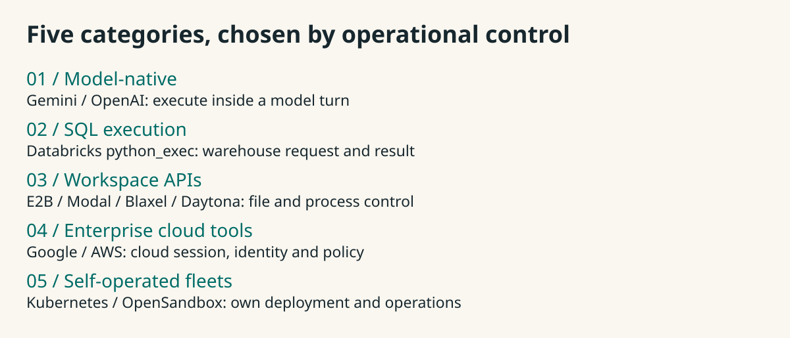
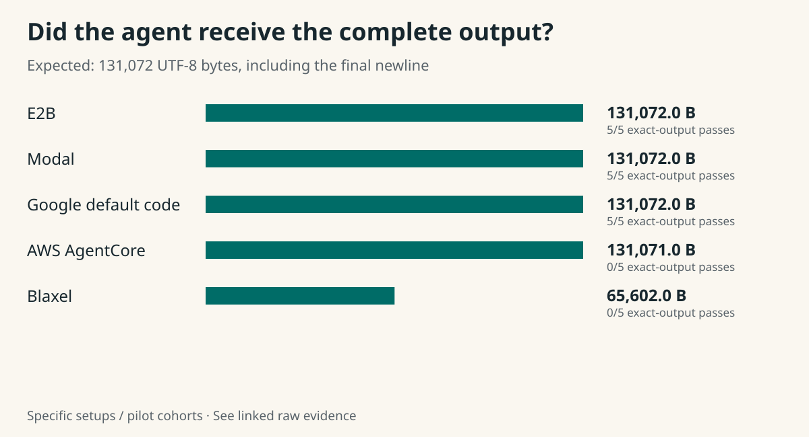
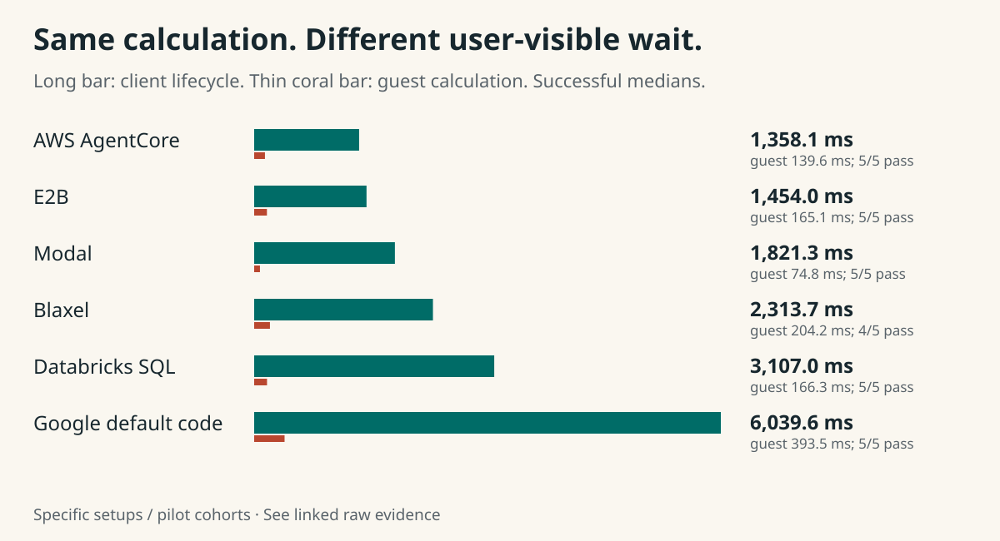
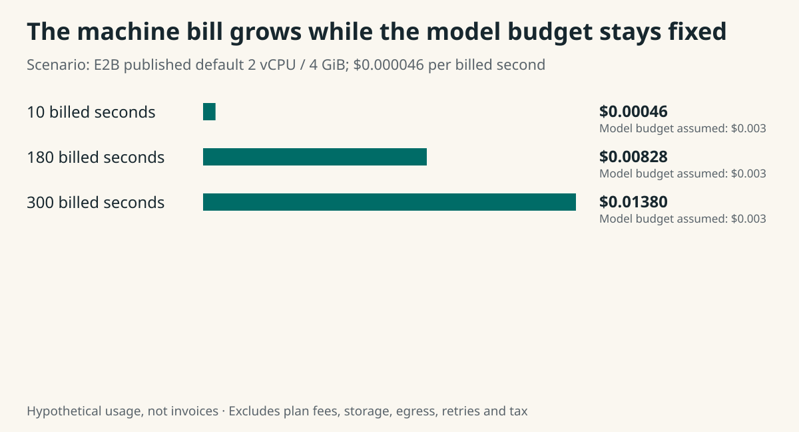
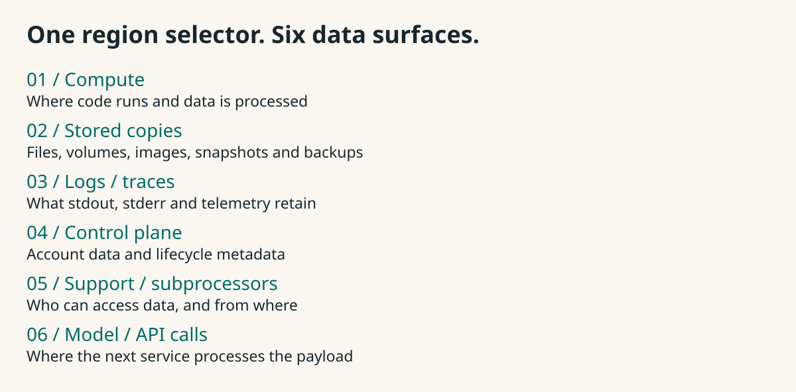
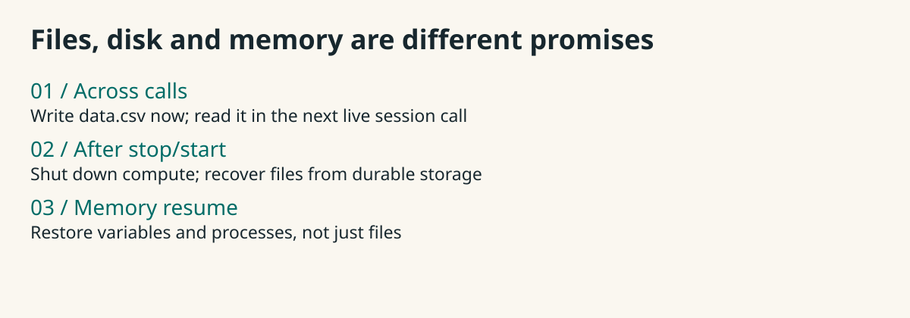

Fix a repository
Keep files across calls, run tests, recover after mistakes.
Trial candidates: E2B / Modal01 / Executive field guide
For PMs, engineering leads and architects choosing where an agent cleans data, edits files or runs tests.
02 / Executive field guide

Dedicated Databricks is a workspace product, separate from SQL. Google/AWS runtime BYOC is separate from the interpreters measured here.
03 / Executive field guide
Keep files across calls, run tests, recover after mistakes.
Trial candidates: E2B / ModalUpload bytes, compute checked totals, return an artifact.
E2B / Modal / Google default codeReserve a device, choose image, test interruptions and placement.
Documented options: Modal / DaytonaOwn routing, isolation, capacity, storage and cleanup.
Documented routes: K8s / OpenSandbox04 / Executive field guide
| Tested path | Binary return | CSV pipeline | Offline wheel | Files across calls | Error recovery |
|---|---|---|---|---|---|
| E2B | 5/5 | 5/5 | 5/5 | 5/5 | 5/5 |
| Modal | 5/5 | 5/5 | 5/5 | 5/5 | 5/5 |
| Google default code | 5/5 | 5/5 | 5/5 | Not established | Not established |
E2B and Modal have positive evidence across these five operations. Google passed the first three through the tested one-shot path.
05 / Executive field guide

Why a PM should care: clipped structured results can be unusable; byte-exact consumers can reject a missing newline. Check what reaches the caller.
06 / Executive field guide

The job finds 148,933 primes below two million. The caller also waits for initialization, staging, transport, collection and cleanup.
07 / Executive field guide

At 300 seconds the machine is 4.6× the assumed $0.003 model budget. Substitute your actual model bill. Count idle wait, failed attempts and retained storage.
08 / Executive field guide

Example: Modal documents EEA compute pinning with US logs/snapshots/managed durable storage. Daytona shared GPUs ignore geographic preference.
09 / Executive field guide

The pilot verified files across calls on E2B and Modal. Durable disk after stop and memory checkpoint/resume need their own trials.
Daytona GPU sandboxes are deleted on stop; external persistence needs an explicit plan.
10 / Executive field guide
Exact attempts, provider contracts and reproduction commands are in the repository companion.
A public repository destination is not configured in this checkout. Add its reviewed release URL when publishing the article or attachment.